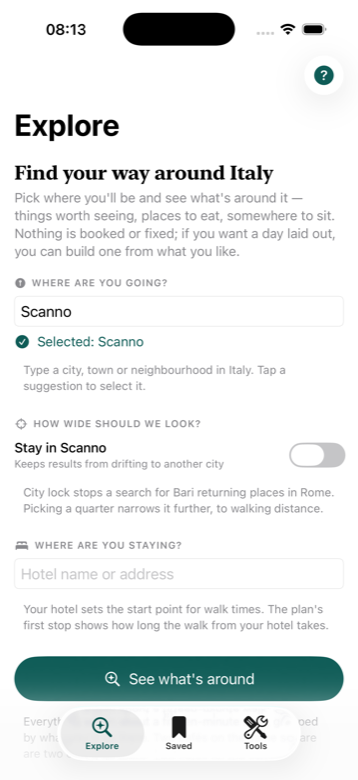
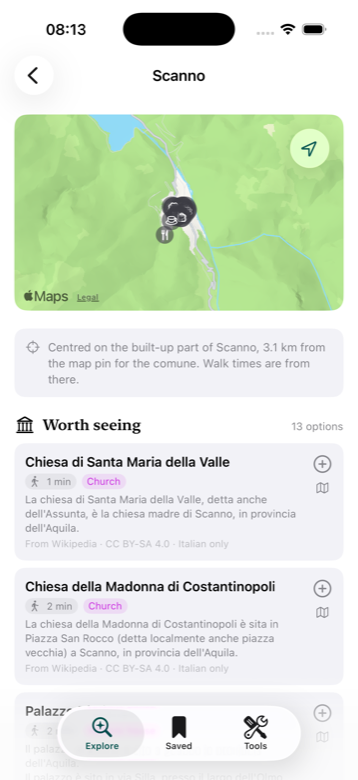
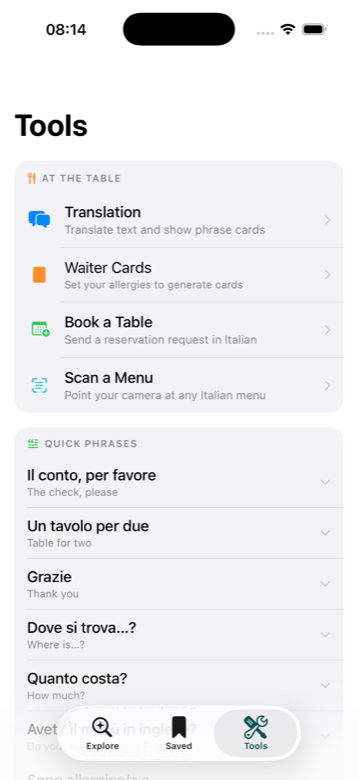
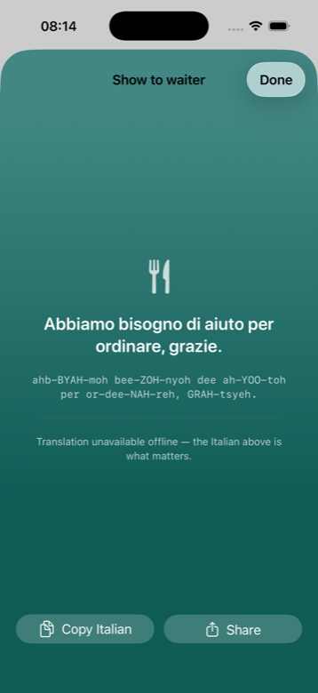

A travel companion for Italy — see what’s around you, read the menu, talk to the waiter.
Say where you’ll be and ItaloPlanner shows what’s within a short walk, grouped by what you’d actually do there. Every description is sourced and credited to the people who wrote it. Nothing is invented, and nothing about you is collected.
Built for iPhone, iOS 26 and later.
Worth seeing, views, sit outside, eat, coffee, shop — with walk times and opening hours. Two cafés on the same square are two choices, not a mistake.
Pick what you like and it becomes an editable walking timeline, kept inside one walkable zone with every leg measured. Export to Calendar.
Point the camera at an Italian menu. Dishes, prices and descriptions are pulled out and translated on the device.
Set your allergens once and get a card in Italian the waiter can read directly, with pronunciation for anything you’d rather say aloud.
Regional grapes, appellations and food pairings — offline, with pronunciation respellings so Sagrantino is sah‑grahn‑TEE‑noh.
Pin a city or quarter before you travel and its guide content stays on the phone, for anyone watching their data abroad.




The app has not been to these places, so it does not write about them. Descriptions are quoted from open sources and credited on the card they appear on, with a link back to the article.
| Source | Used for | Licence |
|---|---|---|
| Wikivoyage | Descriptions, opening hours and prices, written by travellers who went there | CC BY-SA 4.0 |
| OpenStreetMap | The places in an area, their hours, contacts and dietary tags — mapped by people who live there | ODbL |
| Wikipedia | Descriptions for churches, palazzi and museums no guidebook covers, in English and Italian | CC BY-SA 4.0 |
| Apple Maps | Place search, addresses and phone numbers | Apple’s terms |